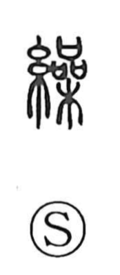

繰

Uncategorized
Kun: kuru | On: so
to reel ・ to wind ・ to repeat
Explanation
A phono-semantic character: the silk-thread element marks its connection with textiles, while a phonetic component provides the on-reading so. The Shuowen describes it as “something like the dark blue of silk,” evoking indigo-dyed cloth; from the world of silkwork it took on the concrete sense of reeling—drawing filament from cocoons and winding thread. In Japanese this yields the kun reading kuru and extends naturally to actions done over and over, as heard in everyday expressions like kurikaesu (to repeat), kurigoto (tedious, repetitive talk), and yarikuri (making do by juggling resources).